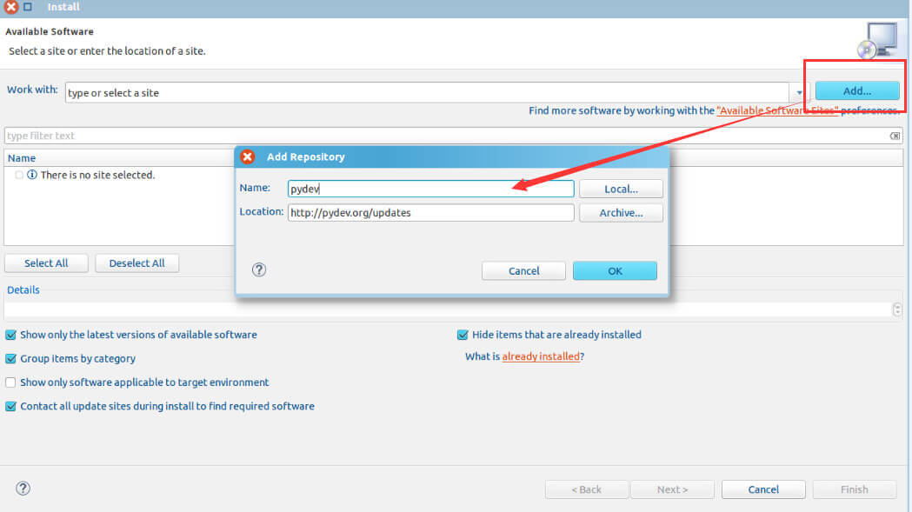
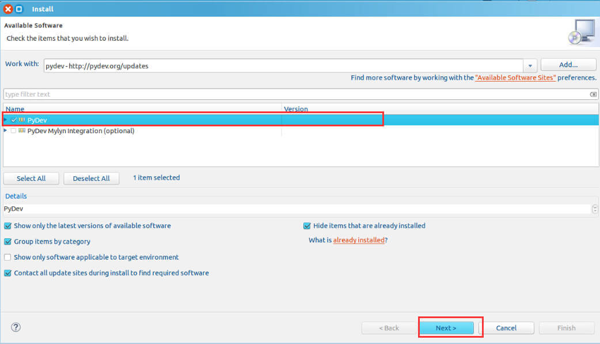

本文包括：
- 安装python环境
- eclipse安装 python 插件——pydev
- python 安装 opencv
- python 安装MySQLdb（windows）
一、安装Python
- windows：请下载Anaconda（包含各种库和python环境）
- linux: 一般自带，没有的话就输入Python，应该会有提示apt-get install 安装的命令
ps:如果你已经安装了python，那么请跳转第三步，在eclipse 下安装pydev插件，便于开发。( 当然，更推荐使用Pycharm ) : )
二、安装 pydev
打开eclipse，点击help-> install new software，在弹出的窗口点击add如图，输入如图内容（Name可以随便写）
我输入的是PyDev，Location是http://pydev.org/updates

在接下来的选择pydev，一路next即可。

附- pydev使用攻略
在file ->new 中找到pydev，没有的话就是在others


新建出来之后如图：
在src右键new - PyDev module


其中，前1~5行是模版自己给的
我们可以在最后一行输入print ‘hello world’

但这样直接运行会报错，因为为中文字符。
请在第一行中加入
# -- coding: utf-8 --
意思为文件编码为utf-8
按ctrl + f11即可直接运行，结果如下图：

三、安装 opencv
如果你需要处理图像，可以使用opencv。
大多数网上的opencv安装挺复杂，我这里只需要几步。
首先前往http://opencv.org/downloads.html下载，我下的版本是2.4.10
安装opencv需要numpy等库。（安装py的时候你可以装（Anaconda）直接搞定所。）
下载好后，进行解压缩，打开opencv\build\python\2.7，看你系统是32位选X86，64位选X64，将里面的cv2.pyd复制到python安装目录\Lib\site-packages下即可。
然后试试：
1 | import cv2 |
不报错即OK。
四、安装MySQLdb
前往 http://www.codegood.com/downloads 下载你系统和python对应的版本
比如博主我的为win8,64位，2.7版本，于是下载 MySQL-python-1.2.3.win-amd64-py2.7.exe
下载后双击安装即可。
接着执行如下：
1 | import MySQLdb |
不报错即安装成功。